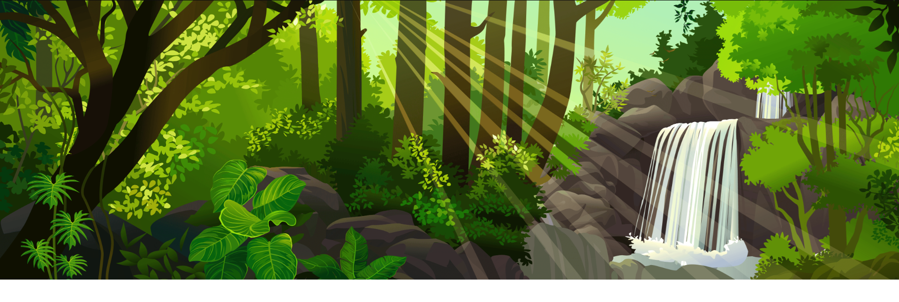
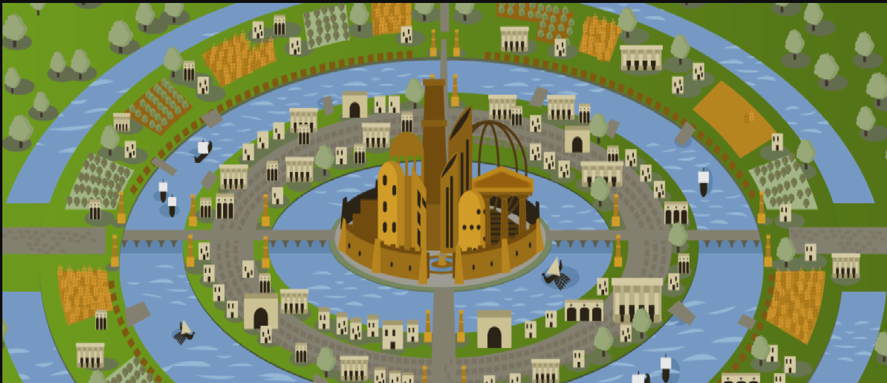

Vamos conhecer sobre as revoluções do Brasil durante o império e a república, por onde quer começar?
Colocar um texto aqui
Fato Histórico
Vamos conhecer sobre as revoluções do Brasil durante o império e a república, por onde quer começar?